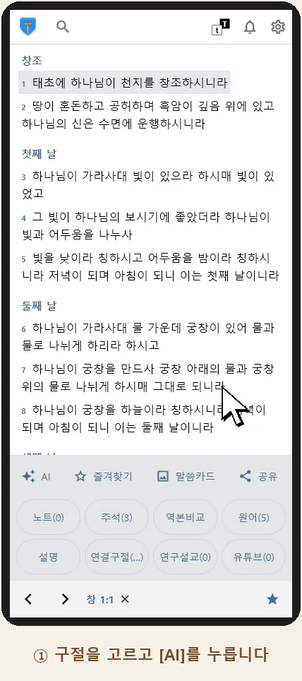

모바일 앱에서 수시로 이용하는 기능들을 편리하게 사용할 수 있도록 모아서 홈 화면에서 배치하였고 사용자의 필요에 따라 숨기거나 재배치 할 수 있습니다.
오늘의 말씀카드 : [공유] → 사진 선택, 하고 싶은 말, 기프트 선물하기 (쇼핑몰에서 구매하면 쇼핑몰이 상대방에게 SNS 전송하고, 사용자는 앱으로 말씀카드를 보내기)
나의 시가서 쓰기 : 시편, 잠언, 전도서, 아가서를 "자유롭게" 또는 "양식에 맞춰" → AI 도우미 → 구절연결
오늘의 암송 : 모든 버전의 모든 구절 암송하기, 암송구절 추가/삭제, 주제별 / 성경버전별 암송
오늘의 퀴즈 : 단계별 성경퀴즈, 오답 다시 풀기
기도 노트 : 개인기도/공동체기도, AI도우미 (기도내용에 맞는 성경구절 추천)
검색창 : 성경구절, 주석, 설명문, 용어, 노트, 도서, 설교 등 검색
최신 뉴스/유투브 : 최근 기독교 뉴스, 묵상글, 유투브 자동수집 (뉴스와 묵상글은 DB에 저장하지 않고 사용자 선택에 따라 구글 자동번역)
진행 중 : 진행중인 묵상플랜, 읽고 있는 도서/설교
둘러보기 : 가끔 둘러보기 좋은 아이템 (메시아 가계도, 성경 인물들의 믿음의 발자취, 성경연대표, 성경유적사진, 성지순례)
화면 배치 : 사용자의 선호에 따라 홈화면에 표시할 항목을 선택하고 배치장소를 이동
화면 준비 중 · home
성경
성경묵상의 가장 핵심화면으로서, 성경구절과 모든 자료를 연결하고 내가 작성한 연구자료를 AI를 활용해서 수정하고 다른 구절과 자동으로 연결하는 기능
노트: 성경구절 단위로 여러 개의 묵상노트를 작성 (구절 범위 선택 가능)
설명: 책·장·단락·구절 단위로 배치된 설명문, 묵상질문/기도 예시, 분야별 AI도움말(평신도 직업과 사역 형태 구분), 사용자 모드(AI도우미를 통해서 새로 작성하고, 수정하거나 숨기기 가능)
주석: 책·장·단락·구절 단위로 배치된 주석(원문/번역), 구절과 연결된 외부 주석사이트에 바로가기
원어: 구절에 등장하는 낱말(원어), 용어 설명문, 이 낱말이 나오는 다른 구절
연결구절: 다른 구절과의 연결관계 설명문, AI 도우미, 사용자모드(연결구절과 설명문 추가/수정/숨기기)
연구설교노트 : 짧게 구절 묵상노트 작성 후 깊이 있는 학습이 필요한 경우 연구노트 작성, 주일예배 설교내용 요약하기, 설교노트 준비하기, AI도우미 (구절번호 표시하면 자동연결)
유튜브 : 설교 유투브를 주제 구절과 연결, 사용자가 찬양곡 수집, 사용자모드 (사용자가 공유버튼으로 수집하면 다음부터 자동수집, 채널/영상 단위로 즐겨찾기/숨기기)
기타 : 역본비교 , 성경 연대표, 암송하기(성경 66권 모든 구절 성경암송 가능), 즐겨찾기, 공유하기
화면 준비 중 · verse_desc
화면 준비 중 · verse_link
화면 준비 중 · verse_lex
구절을 선택하면
AI대화, 말씀카드 보내기, 말씀 글 보내기
듣기와 녹음
내 목소리 녹음하기 (연간/매일 목표를 정하고 녹음, 묵상/암송하고 녹음, 주일설교 구절 녹음), 공동체 묵상구절 녹음하고 공유하기, 할아버지 목소리로 성경듣기, 나의 목소리를 가족과 공유하기
화면 준비 중 · voice
플랜
오늘 읽어야 할 묵상플랜 · 플랜 찾기(시작하기) · 렌즈묵상 · 내 플랜 만들기
성경전체 통독(1~3년), 주제 묵상(1주일~1년), 신앙회복을 위한 플랜 등 다양. 성경 전체를 하나의 일관된 관점(렌즈)으로 묵상하고 체계적으로 이해할 수 있도록 돕는 렌즈묵상. 내플랜 만들기를 통해서 수정하고 공동체와 공유하기 가능
플랜 하나를 마친 뒤 다른 플랜을 시작하는 것이 좋습니다. [시작하기]를 클릭하면 홈화면이 「진행 중인 묵상」에도 표시됩니다.
화면 준비 중 · plan
내 서재
도서·설교집: 원문을 여러 언어로 번역하였으며 큰 분량을 매일 읽기 쉬운 단위로 분할하여 묵상자료로도 활용 가능. 도서노트를 쓰고 AI도우미로 분석
연구설교: 연구/설교노트 쓰기(기호와 표를 입력 가능, 성경구절과 원어를 연결 가능)
주일설교를 요약하면 즉시 자동 저장되고, 참조 구절약명을 타이핑하면 자동으로 연결되므로 나중에 참조구절에서 설교자료에 접근 가능.
선교사자료: 전세계 선교사 자료를 단계별로 수집중이며, 국가별/사역형태별 분류, 선교사의 사명구절, 출판물 번역, 영상 연결을 진행중
화면 준비 중 · psalm
최신
묵상 / 뉴스 / 내 수집함
최신 뉴스, 최신 묵상블로그, 최신 유튜브(말씀, 찬양, 기도, 영화, 성지답사 등) 등을 자동수집, 사용자 수집함
최신뉴스/묵상 : 외국어를 몰라도 자동번역 뉴스/묵상의 맥락 이해 가능, 번역설정 버튼 (번역/원문, 제목은 자동번역, 본문은 크롬번역을 한번은 수동 설정해야 이후에 자동번역됨), 자동 다운로드 주기 설정 기능
유튜브
최신 말씀 · 기도 · 답사 · 영화 · 내찬양 · 내 수집함
「+Asah Dabar」로 유튜브·크롬에서 바로 담기 · 복사한 주소 저장
화면 준비 중 · hagah_save
AI 대화
4가지 옵션: Free(일반적인 자유 채팅) · 세상(세상에서 일어나는 일에 대한 성경적 관점에서의 대화) · 자료(앱에 저장된 연구노트/성경용어에 대한 대화) · 말씀(구절 중심의 궁금증, 학습, 묵상, 연구/설교자료작성 도우미)
User : AI가 사용자에 대하여 이해하고 적절한 대답을 할 수 있도록 사용자에 대한 정보, 신앙 배경, 주요 관점을 설정.
함께 다룰 것(Pick) : 질문을 하면서 특히 다루어야 할 항목을 구체적으로 설정하는 기능
통합본 · AI별 원래 답 · 다시 검증 : 여러 AI모델을 동시에 사용하는 경우 답변의 정확성을 높이기 위해서 교차 검증하기 위한 기능
이어서 묻기(방향 바꾸기 / 더 깊이 등) : 연결선상에서 대화의 방향을 전환하기 위한 옵션
이 대화를 한 글로 → 저장하기 → 「어디에 담을까요?」(노트 · 설명문 · 연구/설교노트 등 선택 가능)
기타 : 새 대화 · 수집함 · 대화 정리 · 휴지통 · 프롬프트 라이브러리
AI 설정: 계정, 기본 AI, 답 검증, 하루 호출 한도, AI 기준 역본, 이 앱에서 쓴 AI 사용량
화면 준비 중 · ai_word
화면 준비 중 · ai_pick
처음 쓰는 분

API 키 임의한도 : 사용자는 다양한 경로를 통해서 AI 회사의 API 키를 사용합니다. AI와 대화를 많이 하면 자기도 모르게 AI회사의 하루 한도에 근접할 수도 있습니다. 만일, AI와 진행해야 할 다른 일들이 많다면, 내일 아침까지는 사용하지 못할 수도 있습니다. 다른 일을 위하여 여유분을 남겨 두어야 할 필요가 있는 경우를 대비하기 위해서 설정화면에 임의한도(User-defined Limit)를 설정할 수 있도록 하였습니다.
따라서, 이 앱에서 설정한 API 키 임의한도에 도달했더라도, AI회사의 한도에 도달한 것은 아닙니다. 만일, 다른 브라우저에서 대화를 진행할 필요가 없다면, 설정화면에서 보수적으로 설정했던 임의한도 수치(예: 100)를 더 올리면(예: 150) 사용할 수 있습니다. 반대로, 이미 다른 브라우저에서 API 키를 많이 사용했다면 이것은 이 앱의 계산에 포함되지 않기 때문에 이 앱의 임의한도에 도달하기 이전에 AI회사에 의해 차단될 수도 있습니다. 이러한 경우에는 다음 날 다시 대화를 진행하면 됩니다.
둘러보기
메시아 가계도: 아담에서 그리스도까지 가계도 흐름 속에서 언약을 어떻게 성취하였고 어디에서 넘어졌는지
믿음의 발자취: 아브라함에서 제자들까지 믿음과 선교의 발걸음
성경 연대표: 하나님의 구속역사와 세계역사를 나란히
성경유적사진: 성지순례 지역의 유적지, 유물, 자연의 모습
성지순례: 예루살렘, 튀르키예 등 추천 코스, 경로설계 도우미
화면 준비 중 · explore
화면 준비 중 · card
설정
AI 설정: 계정, 기본 AI, 답 검증, 하루 호출 한도, AI 기준 역본, 이 앱에서 쓴 AI 사용량
다운로드 / 삭제(필수·선택 자료, 자료 언어)
PC 연결 관리 — PC 페이지를 보세요
내 자료 백업
언어 선택 · 화면색 · 글자 크기 · 알림 설정 · 녹음 · 공유할 때 보일 이름 · 익명 이용통계 · 썸네일 보기 · 앱 판